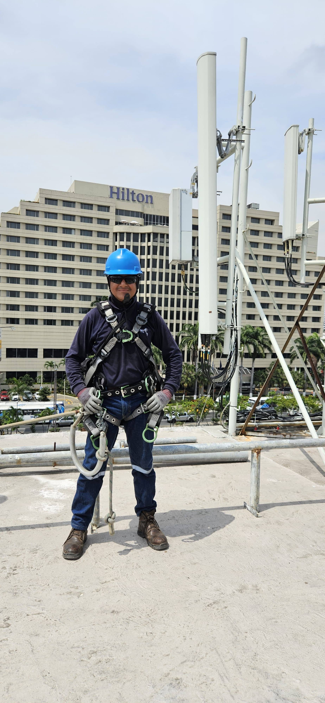
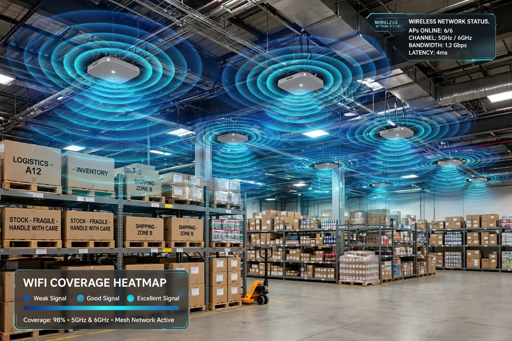

Hola, soy Dannes
Soy estudiante apasionado por las telecomunicaciones y el desarrollo web.
Sobre mí
Soy estudiante de Grado de la carrera Ingenieria en Sistemas Inteligentes en la Universidad Ecotec. Me gusta el software libre, Linux y crear páginas web funcionales y limpias. Estoy aprendiendo HTML, CSS y Git.
Mis Habilidades
- HTML5 - Estructura semántica
- CSS3 - Diseño y Flexbox
- Git y GitHub - Control de versiones
- Linux - Manejo de terminal
Mis Proyectos y Servicios

Proyecto 1: Soluciones de Radio Enlaces
Implementación y configuración de radio enlaces punto a punto (PtP) para interconectar sedes a larga distancia. Soluciones estables para empresas que necesitan internet en zonas donde no llega la fibra.
- Enlaces de largo alcance
- Configuración de antenas Ubiquiti / Mikrotik
- Optimización de señal y alineación

Proyecto 2: Soluciones Wireless WiFi
Diseño e instalación de redes WiFi para hogares, negocios y espacios amplios. Cobertura total, control de usuarios y alta velocidad.
- Instalación de Access Points
- Redes malladas para casas y empresas
- Hotspot con portal cautivo
Contacto
Puedes contactarme por correo: dannes.benavides@istct.edu.ec